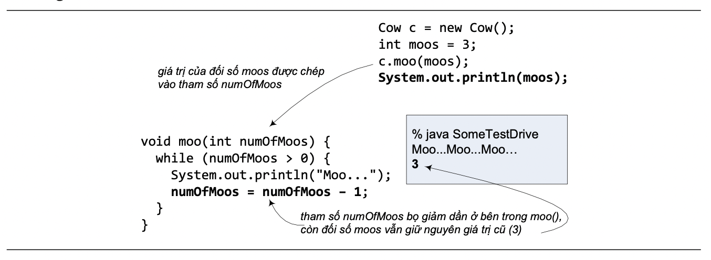

5.3. CƠ CHẾ TRUYỀN BẰNG GIÁ TRỊ
Ngôn ngữ lập trình sử dụng duy nhất một cơ chế truyền tham số: truyền bằng giá trị (pass-by-value). Khi một đối số được truyền vào một phương thức, chỉ có giá trị của nó được chép vào tham số tương ứng. Kể từ đó, các thao tác liên quan của phương thức chỉ được thực hiện trên tham số đó – thực chất là biến địa phương của phương thức. Còn bản thân đối số đó không chịu ảnh hưởng gì của phương thức được gọi.

Hình 5.5: Đối số không chịu ảnh hưởng của tham số.
Cơ chế truyền bằng giá trị hoạt động như thế nào khi đối số là tham chiếu đối tượng? Cũng vậy thôi, giá trị của đối số được chép vào tham số. Và giá trị ở đây, như ta đã nói về bản chất của tham chiếu, là chuỗi bit biểu diễn cách truy nhập đối tượng đang được chiếu tới. Kết quả của việc truyền đối số là ta được tham số cũng là một tham chiếu chiếu tới cùng một đối tượng mà đối số đang chiếu tới. Ta sẽ gặp nhiều ví dụ về việc này trong các chương sau.
Những điểm quan trọng:
- Lớp định nghĩa những gì mà một đối tượng biết và những gì nó có thể làm.
- Những gì mà một đối tượng biết là các biến thực thể của nó (trạng thái của đối tượng)
- Những gì một đối tượng có thể làm là các phương thức của nó (hành vi của đối tượng)
- Các phương thức có thể sử dụng các biến thực thể của đối tượng, nhờ đó các đối tượng thuộc cùng một lớp có thể có hành xử không giống nhau.
- Một phương thức có thể có các tham số. Ta có thể truyền các giá trị vào phương thức qua các tham số của phương thức.
- Số lượng và kiểu dữ liệu của các giá trị ta truyền vào phương thức (đối số) phải khớp với thứ tự và kiểu dữ liệu của các tham số được khai báo của phương thức.
- Các giá trị truyền vào phương thức hoặc được trả về từ phương thức có thể được ngầm đổi từ kiểu hẹp hơn sang kiểu rộng hơn, hoặc phải được đổi tường minh sang kiểu hẹp hơn.
- Các giá trị dùng làm đối số có thể là một giá trị trực tiếp (1, 'd', v.v..) hoặc một biến hay biểu thức có giá trị thuộc kiểu đã được khai báo cho tham số.
- Một phương thức phải có kiểu trả về. Kiểu trả về void có nghĩa phương thức không trả về giá trị gì. Nếu không, phương thức phải trả về một giá trị tương thích với kiểu trả về đã khai báo.